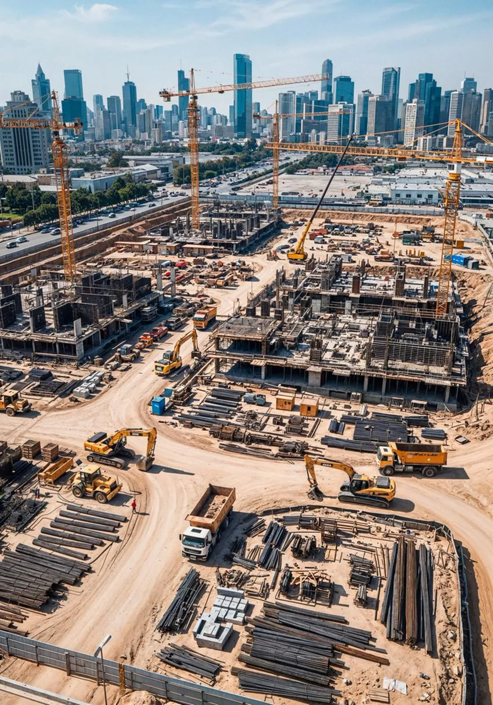

Procurement-led infrastructure support.
Clients specify what they need to build, protect, or sustain. AZAREL sources it through trusted suppliers and coordinates delivery into the operating environment.
About the practice
AZAREL's critical infrastructure practice is procurement-driven. Clients set the requirement, and we source the equipment, materials, and machinery through a pre-vetted network of trusted suppliers, then coordinate delivery into the operating environment.
We support operational delivery across energy, transport, logistics, ports, airports, and mining. The focus stays on getting the right supplier to the right project, on specification and on schedule, in the conditions the project actually faces.
What we offer
Procurement Support
Sourcing, qualifying, and contracting the equipment, materials, and machinery that critical projects depend on, from a defined requirement to a supplier ready to deliver.
Supplier Market Entry Advisory
A clear, de risked path into African infrastructure markets for global suppliers, built on market studies, regulatory mapping, partner matchmaking, and practical entry strategy.
Vendor Qualification
Independent qualification of suppliers on capability, track record, financial standing, and delivery integrity, so the suppliers you rely on can perform.
Supply Chain & Risk Management
Assessment and mitigation of delivery, logistics, currency, and continuity risk across the supply chain, so exposure is found early, not on site.
Why AZAREL
We reduce procurement and market exposure by qualifying suppliers and testing assumptions before commitments are made.
We align sourcing and partnerships with local content and regulatory frameworks, turning a compliance requirement into a competitive position.
We ground every recommendation in primary and secondary research, so decisions rest on evidence rather than assumption.
We protect the quality of our network through continuous vetting, so the relationships we bring are ones clients can rely on.
Where and why we operate
The sectors critical infrastructure depends on, across the African operating environment.
- Energy & Utilities
- Transport, Ports & Airports
- Logistics & Mining
